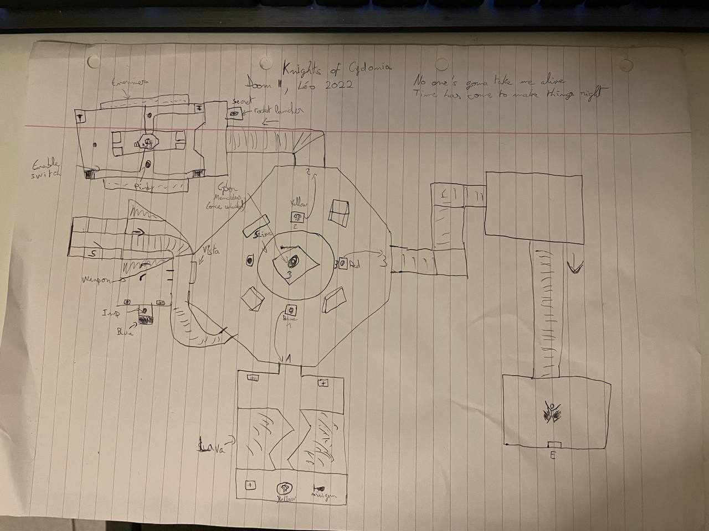
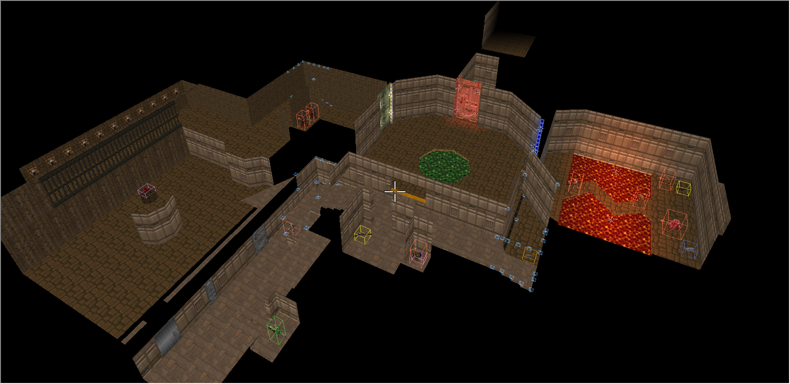
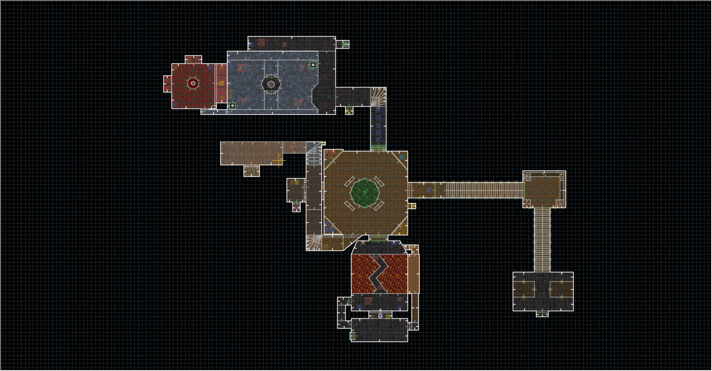

Where the Knights Meet
Présentation et déroulement du projet.
Présentation
- Solo
- 3 semaines
- Exercice du master JMIN
- GZDoom
Where the Knights Meet est un niveau pour DOOM II où le protagoniste doit s'évader et combattre des ennemis sur son chemin. La variation, la réutilisation de l'espace et le souci de la mise en scène tentent de rendre ce niveau différent de ceux des années 90 dont il s'inspire.
Déroulement du projet
Ce niveau pour DOOM II fait partie d'un des exercices du premier semestre de M1 à l'ENJMIN. Une fois la consigne donnée, je me suis immédiatement mis à la recherche d'un thème et d'un layout pour le niveau.
Originellement appelé "Knights of Cydonia", du nom de la chanson de Muse, l'idée est de proposer un niveau avec une place centrale dans lequel on revient plusieurs fois pour débloquer plusieurs portes au fur et à mesure. Chaque salle est conçue avec l'idée de progression joueur en tête, ainsi qu'une mise en scène.
Le niveau se construisait en parallèle d'une narration. No one's going to take me alive. The time has come to make things right. est la base de cette narration, tirée des paroles de la chanson mentionnée plus tôt. J'ai cependant préféré retirer la narration du niveau, et je pense que le niveau n'en n'est pas pénalisé.
La construction du niveau se fait dans Ultimate DOOM Builder. Ayant l'habitude d'Hammer et TrenchBroom, la prise en main de cet outil est rapide. Je suis le layout papier et rapidement, j'ai un résultat proche de ce que j'imaginais.
Mais pendant mes tests, je me dis que le niveau a quelques problèmes de design, comme des murs cachant des éléments essentiels à la progression (qu'on peut facilement trouver, si on connaît le système d'automap de Doom). Je revois donc l'agencement de certaines pièces (la pièce en bas de l'image ci-dessous, celles en haut à gauche également), ce qui permet par la même occasion d'allonger le temps de jeu du niveau.
Un point de design à revoir serait le combat final, qui se passe dans l'arène centrale. Les endroits pour se cacher ne sont pas assez bien agencés pour être agréables à utiliser, et sortir victorieux du niveau peut donc relever de la chance si on n'a pas l'habitude de DOOM.